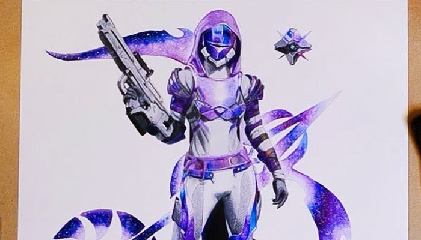
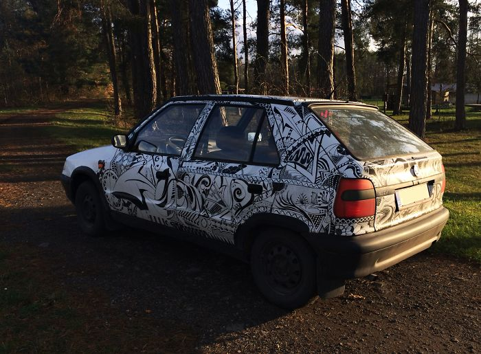
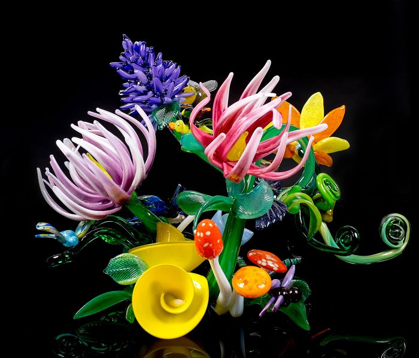

I draw a lot of fan art ranging from games, anime and Disney.
Since discovering my love for Prismacolor Pencils a few years ago, I experienced how well they blended together.
But I’ve always been incredibly inspired and in awe of the cosmos, and I wondered if i could draw nebulae and be able to reflect how beautiful I find this phenomenon in my work.

Everyone either was there already or wants to go to Iceland sometime in the future. I was one of the latter people only a couple of weeks ago. I've been photographing for years so I know how far pictures might be...

This incredible glass sculpture titled, Rabbit Lives at Claire's House, was created by world-renowned glass artist, April Wagner, at her glassblowing studio in Pontiac, MI. Drawing inspiration from Alice in Wonderland, you can fall down a rabbit hole admiring all the...
epiphany studios